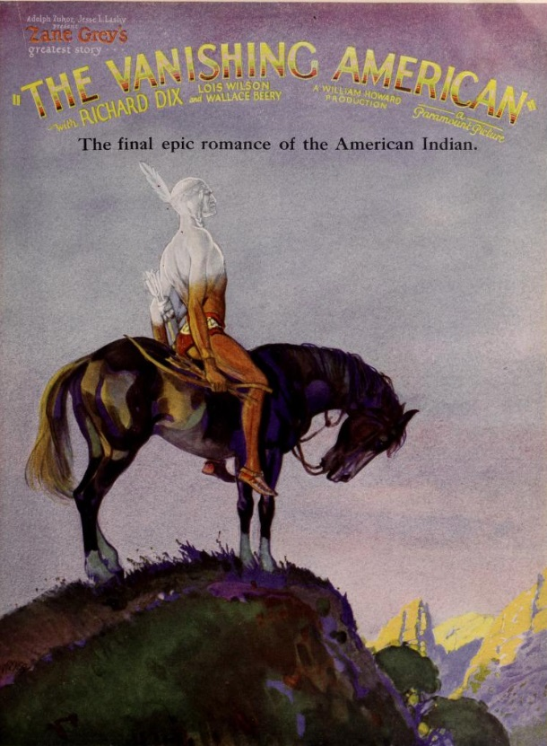
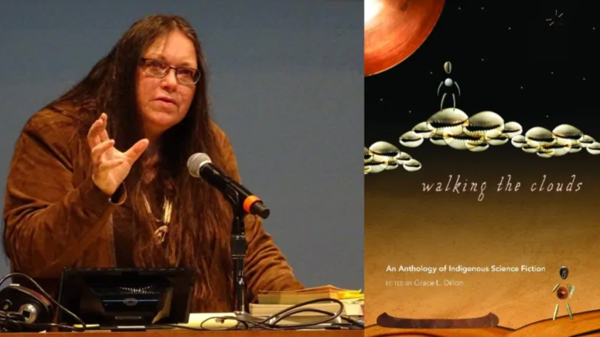

Return
Yurok Futurism
Yurok Futures
Indigenous Futurism

Throughout North America Indigenous history the settler colonies of Europe have sought to erase indigenous peoples through orchastrated and continuous genocide and mythmaking. They have stolen land, murdered, and forcefully relocated millions Indigenous Peoples. They have created an image of Indigous People for production and confined them to history through literature and media. “The indigenous people are gone. Look around you. You don’t see them with bows and arrows on horseback”.

Indigenous Futurism seeks to reposition the contemporary understanding of nature. By placing certain human societal structures (such as capitalism and nationalism) within an understanding of ecology and spiritualism, Indigenous Futurism seeks to reclaim environmental balance and undo false hierarchies. It imagines and constructs a landscape that pushes forward current Indigenous goals such as reclamation of land, language, and culture into a far-future paving a way for Indigenous Sovereignty to make space for itself in imaginations. By constructing futures that do not cede to the power dynamics of US nationalism and capitalism, Indigenous Futurism could provide space for complex dialogue around what it means to be Indigenous outside of colonial impositions. By imagining a future best befitted for themselves, they give others the agency to imagine futures of their own that reconcile their goals, locally and beyond.
Indigenous Futurism is connected to earlier movements by African artists and creators called AfroFuturism. This movement has spurred other similar movements such as Chicanafuturism. These movements seek to reimagine decolonization, borders, and past/present/and future time scapes. Artists like Sun Ra and films such as Black Panther build on imaginations of a world through the lense of people largely underrepresented in speculations of the future envisioned by Western Sci-Fi imagery and narratives. The movements also seek to rewrite histories written without people of color’s consent or participation.
Slipstream
Coined by Grace Dillon in her book Walking the Clouds, the term splistream is “the overtly disruptive, experimental, and counter realist surface of the text” (Dillon 3). It refers to the idea of interwoven time in contrast to western linear time. In indigenous cultures, time is understood to be non-linear. Experiences and moments are interconnected in a cyclical web leading to an layered and fluid understanding of one’s place in their environment.
In the book Dillon writes, “All forms of Indigenous futurisms are narratives of biskaabiiyang, an Anishinaabemowin word connoting the process of ‘returning to ourselves,’ which involves discovering how personally one is affected by colonization, discarding the emotional and psychological baggage carried from its impact, and recovering ancestral traditions in order to adapt in our post-Native Apocalypse world.”
The book features stories from Indigenous authors such as Leslie Marmon Silko (Laguna Pueblo), Gerald Vizenor, William Sanders and Stephen Graham Jones (Blackfeet).
Other Indigenous authors explore this genre though various forms of literature and art.